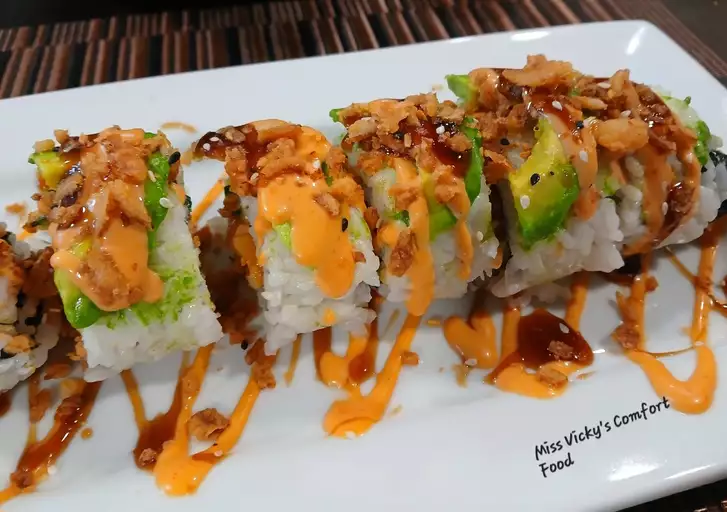

Home
Dragon Roll

Description
This dragon roll is a delicious and festive uramaki sushi roll featuring unagi, avocado, and shrimp tempura. It's fun to decorate the roll to look like a dragon! Serve with unagi sauce, soy sauce, wasabi, and pickled ginger.
Ingredients
- 3/4 cup Japanese sushi-style rice
- 3/4 cup water
- 2 1/4 teaspoons salt
- cooking spray
- 8 frozen tempura shrimp
- 2 sheets nori (dry seaweed)
- 2 sticks imitation crab meat, cut into 1/4-inch pieces
- 1 cucumber - peeled, seeded, and cut into 1/4 strips
- 1 avocado, sliced
- 10 ounces frozen unagi kabayaki (grilled eel), thawed and sliced into 2-inch strips
Steps
- Rinse rice in a strainer until water runs clear. Combine rinsed rice and water in a medium saucepan; bring to a boil. Reduce heat to low, cover, and cook until rice is tender and water is absorbed, about 20 minutes.
- Combine rice vinegar, sugar, and salt in a small saucepan over low heat; stir until sugar is dissolved, 1 to 2 minutes. Pour over rice; stir until rice cools and looks dry.
- Preheat the oven to 400 degrees F (200 degrees C). Grease a baking sheet with cooking spray.
- Arrange shrimp tempura on the prepared baking sheet.
- Bake in the preheated oven until golden and crispy, about 6 minutes per side. Cut the tails off of 4 tempura shrimp.
- Cover a bamboo sushi rolling mat with plastic wrap. Lay 1 nori sheet, shiny-side down, on the plastic wrap. Spread 1 cup rice over nori using moistened fingers, leaving a 1/3-inch border. Flip nori so rice is facing the mat.
- Arrange imitation crabmeat and cucumber along the bottom edge of nori. Place 2 tail-off shrimp in the center of nori. Place 2 tail-on shrimp on the end so that the tails extend over the sides of nori. Lift the edge of the mat and roll up nori into a tight log around filling.
- Transfer sushi roll to a serving plate. Layer avocado and unagi slices on top to cover the top and sides of roll. Slice roll into 8 pieces using a moistened knife. Repeat with remaining nori, rice, crabmeat, cucumber, avocado, and unagi to make a second roll.